2. Graph Neural Networks#
2.1. Why GNNs?#
Let us start by defining our multi-dimensional vectors \(\mathbf{x}\in\mathbb{R}^d\) to \(\text{Train}\) and \(\text{Test}\). Then, in our usual vectorial setting, the aim of a Neural Network, say a Multi-Layer perceptron (MLP) is to learn a latent space where the projections \(\mathbf{h}\in\mathbb{R}^{d'}\) (with \(d'\ll d\)) of the inputs \(\mathbf{x}\) do minimize a given loss function, such as the cross entropy wrt \(\text{Train}\). This is usually expressed as follows
where \(\Omega\) is the parameter space where the unknowns \(\Theta\) of the learner do “live”.
By virtue of functional composition, a MLP is just the staking of many non-linear functions called layers \(\text{L}^{l}\), with \(l\ge 1\). Using recursion, we have
The above definition is ambiguous on purpose. Why?
Firstly, the embedding \(\mathbf{h}^{(l)}\) resulting from the function \(\text{L}^{(l)}\) is given by the composition
However, instead of using a functional notation for \(\text{L}^{(l-1)}\), we use the resulting embedding \(\mathbf{h}^{(l-1)}\) of that layer. Note that the base case of the recursion is \(\mathbf{h}^{(0)}=\mathbf{x}\), which corresponds to \(\text{L}^{(1)}\).
Therefore, if the MLP has \(L\) layers, we can consider it as the following function:
In terms of results, \(\mathbf{h}=\mathbf{h}^{(L)}\) results the following processing chain:
where \(\Theta^{(l)}=(\mathbf{W}^{(l)},\mathbf{h}^{(l)},\sigma^{(l)})\) are the parameters (weights, biases and non-linear activations) characterizing each layer. Actually,
is usually a huge (parameter) space!
Learning as search. As a result, learning via MLPs (or NNs in general) can be seen as findind the parameters \(\Theta\in\Omega\) of a composed function \(\text{MLP}_{\Theta}\) that best maps inputs \(\mathbf{x}\) to outputs \(\mathbf{h}\).
2.1.1. Context is everything#
Evolved NNs such as the Transformers, the state-of-the-art core of LLMs and other AI agents, do leverage the concept of context. In short, inputs \(\mathbf{x}\) do not appear isolated but in streams (this is valid for words in texts as well as for patches in images).
Therefore, when an input \(\mathbf{x}_k\) is seen as a part of a stream
its context is given by the previous (left context) and the subsequent (right context) inputs in the stream. In general, this context is finite up to the memory resources and its size is given by \(h\). For instance, for \(h=4\) we should have
2.1.1.1. How do we consider context during training?#
In Transformers, the driving mechanism is Self Attention. Let us break it up via an example.
Consider for instance the following input stream:
This input stream is considered a \(N\times d_{model}\) matrix \(\mathbf{H}\) where each row is the numerical embedding of a term/word \(\mathbf{h}_1,\mathbf{h}_2,\ldots,\) each one encoding numerically the basic semantics of each word (“The”, “animal”, etc). All the embeddings do have dimension \(d_{model}\).
All the embeddings are learnable and the may play three different roles:
Query (Q): The Query vector for a word determines what information it is looking for from other words in the sequence. It’s the “selector” or “questioner.”
Key (K): The Key vector for a word determines how relevant it is to other words’ queries. It’s what the Query vectors are compared against.
Value (V): The Value vector for a word contains the information that will be passed on to other words, weighted by their attention scores. It’s the actual content being communicated.
By creating these separate vectors, the self-attention mechanism can learn to capture different aspects of the word’s meaning and its relationship to other words. The interaction between Queries and Keys determines the attention weights, which in turn dictate how much of each Value vector contributes to the final output representation of a word. This allows the model to dynamically weigh the importance of different words in the input sequence when processing a specific word.
Keys, queries and values are taken from dictionaries. For instance, we query a dictionary “it” and when the query matches a key entry in the dictionary, we retrieve a value (description).
Then, given an initial embedding, say \(\mathbf{h}_{\omega}\), say \(\omega=\text{"it"}\), we obtain its “flavor” as Key, Query and Value by linear projection:
where \(\mathbf{W}_K\), \(\mathbf{W}_Q\) and \(\mathbf{W}_V\) are learnable matrices of respective size \(d_{model}\times d_k\), \(d_{model}\times d_q\) and \(d_{model}\times d_v\). Actually, these matrices work as separated MLPs.
NOTE: since Keys and Queries should ideally match, it is usually assumed that \(d_k=d_q\). However, \(d_v\) can be different from \(d_k\) and \(d_q\). This is done, for instance, to accomodate a richer semantics as it happens in real dictionaries. It is also typical to make \(d_v\) smaller for efficiency reasons.
How do we know that “it” refers to “animal” in this case?.
Well, the basic mechanism to built the Transformer’s result wrt a given query (say “it”) is as follows:
Unormalized. Given the Query \(\mathbf{Q}_{\omega=\text{"it"}}\), we should acount for the level of correlation between it and each of the Keys. In maths, the correlation between two vectors \(\mathbf{u}\) and \(\mathbf{v}\) is usually done via the dot product \(\langle \mathbf{u}, \mathbf{v}\rangle := \mathbf{u}\mathbf{v}^T\) (projection of the first on the second):
Each of the above products results in a scalar value, say \(S_{(\omega=\text{"it"},\omega')}\). Then, from the viewpoint of the “it” Query, we have a sequence of correlations:
Since each of these values can be either positive or negative, we transform the above sequence into a probability distribution by means of the softmax function.
Remind that \(\text{Softmax}(\mathbf{x}_i):=\mathbf{\exp(\mathbf{x}_i)/\sum_{i'} \exp(\mathbf{x}_{i'})}\) operates on a vector/sequence \(\mathbf{x}\) and the result is highly biased towards the maximal values of \(\mathbf{x}\), where it assigns a \(1\), and the smallest ones, where it assigns a \(0\). The authors of Attention is all You Need pointed out that, when the dot product is large in magnitude, the softmax is pushed to regions where gradient is small, thus difficulting learning. This is why the dot products are scaled by \(\frac{1}{\sqrt{d_k}}\).
In short, softmaxing each row and stacking the rows leads to create the following \(N\times N\) matrix:
where \(\sum_{\omega'} S_{\omega,\omega'}=1\;\forall\omega\) (each row adds up to \(1\)).
The values. In parallel to the computation of the softmax coefficients, we have yet projected the actual semantics of each term, which is contained in the values \(\mathbf{V}_{\omega'}\) of the respective terms.
Then, the new values embedding (say for \(\mathbf{V}_{\omega}\)) results from the weighted sum
Then, \(\mathbf{h}_{\omega}\) is a simple way of expressing the contextual semantics of \(\mathbf{V}_{\omega}\). If \(\omega=\text{"it"}\), then \(\mathbf{h}_{\omega}\) will combine all the values proportionally to how “it” attends (or matches) each of the Keys.
More compactly, the notation
returns an attention matrix.
This process is summarized in Fig. 2.1.
{kind=link}
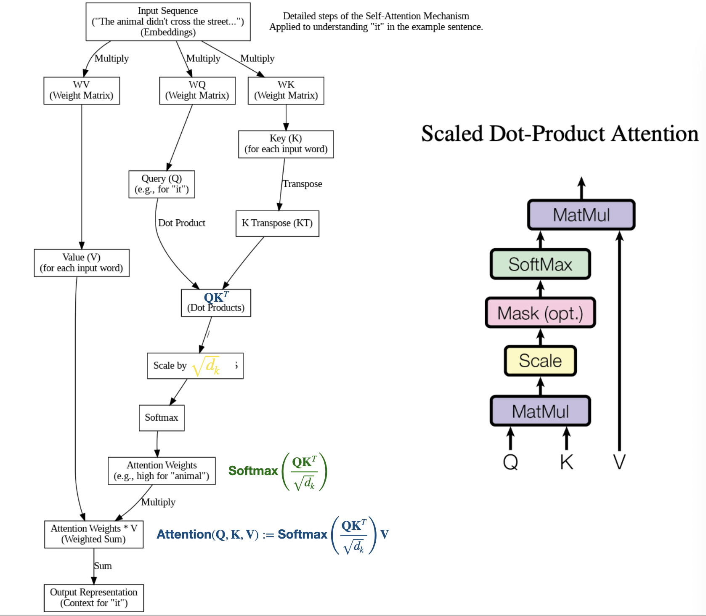
Fig. 2.1 Full context for the meaning of “it”. Image partially generated by Gemini.#
On the learning of the input Keys, Querys and Values. Herein, it is important to note that the embedding for the word “animal”, for instance, is unique and learnable. This is why we project this embedding on \(\mathbf{W}_K\), \(\mathbf{W}_Q\) and \(\mathbf{W}_V\) to get the “flavor” of the “same word” as Key, Query or Value, when required.
2.1.1.2. Transformers as graphs#
Looking at \(\mathbf{S}:=\text{Softmax}\left(\frac{\mathbf{K}\mathbf{Q}^T}{\sqrt{d_k}}\right)\) we can see \(\mathbf{S}\) as an attributed graph where \(\mathbf{S}\in\mathbb{R}^{M\times M}\) is an attributed adjacency matrix and \(\mathbf{S}_{(\omega,\omega')}\in [0,1]\) is the corresponding attention weight of \(\mathbf{Q}_{\omega}\) wrt to \(\mathbf{K}_{\omega'}\).
Take now a global look to \(\mathbf{S}\) (see Fig. 2.2):
{kind=link}
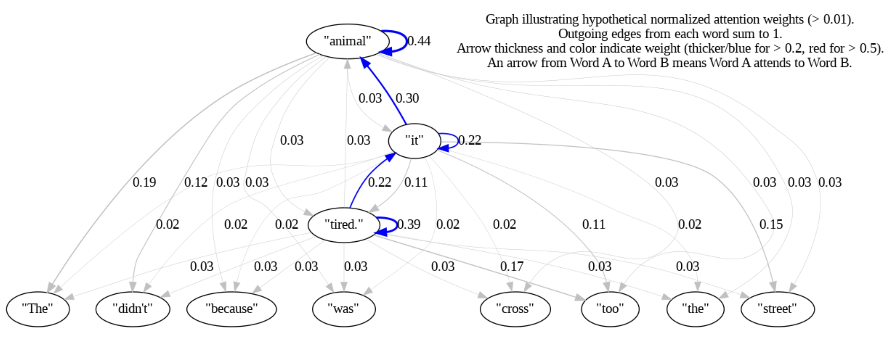
Fig. 2.2 Attention as an attributed graph. Image partially generated by Gemini.#
Note that nodes have self-loops corresponding to self-attentions (diagonal elements \(\mathbf{S}_{(\omega,\omega)}\)) because they appear to be relevant as themselves. However, not all of them are equally relevant.
In particular, the word “animal” attends mostly itself, whereas “it” attends also “animal” (obviously) and “tired” (because it is a property of the animal). The remaining terms have very low self-attentions (below \(0.01\) they do not appear in the Figure).
NOTE: This graph changes dynamically, as well as the embbedings and the weights of the Query, Key and Value matrices.
Update as Message Passing. Finally, the update
can be seen as if all nodes \(\omega'\) in the graph send a message \(\mathbf{V}_{\omega'}\) to node \(\omega\), where this message is modulated by \(S_{(\omega,\omega')}\). As a result, the node \(\omega\) updates its state!
In Fig. 2.2, \(\mathbf{h}_{\omega=\text{"it"}}\) is mainly updated by the current value of “animal” as well as by the existing value of “it” (self-attention).
2.1.1.3. Masking and sequentiality#
Despite the above visualization of the attention graph is explanatory, it is not used during the actual forward pass or training of a Transformer model.
Attention Masking (see optional mask in Fig. 2.1) is used to prevent certain terms/tokens from attending to other tokens. The most common type of masking relevant to sequential processing is look-ahead masking (also known as causal masking), which is typically used in the decoder of a Transformer. In look-ahead masking, the attention scores for future tokens are set to a very low value (effectively zero after softmax) so that a token can only attend to tokens that come before it in the sequence. This is essential for tasks like language generation where the model should not have access to future information.
We have rebuilt this graph to attend only past tokens in Fig. 2.3.
{kind=link}
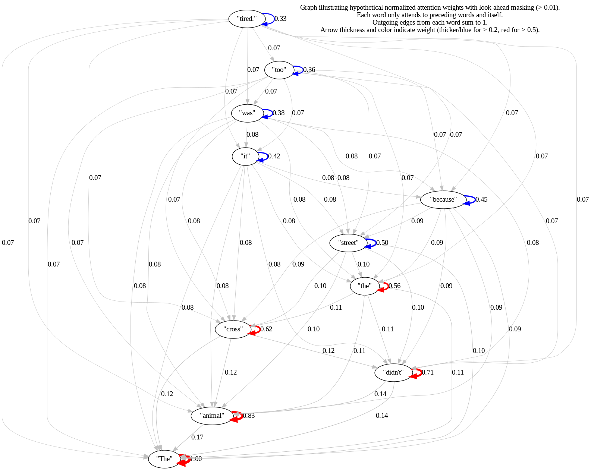
Fig. 2.3 Sequential attention. Image partially generated by Gemini.#
Now, self-attention increases (attend the present, as well as past, but not future). In other words, \(\mathbf{S}\) is zero above the diagonal!I.e.:
Since these decoder-enforcing Transformers use the past and present to predict (generate) the future, they are usually called next token machines.
This is the usual setting for LLMs (Language-based Transformers) and it limits the expresiveness of the Transformer (as we will see later). However, in Vision Language Models or VLMs (Vision Transformers or ViT), free attention is applied. Therein, tokes are “sequentialized” image patches and it is logical that a patch can attend any other patch.
2.2. The power of aggregation#
Message Passing is implicit in certain types of Transformers. This is one of the ingredients that make Transformers so powerful.
As we have seen, Message Passing (MP) provides a flexible combination of the ouput of three MLPs (Queries, Keys and Values) running in parallel for the same inputs.
However, Transformers usually process sequences (NLP) or transform objects (ViT) into sequences to further processing. But What if the objects to process are not sequences, but graphs or networks?
This latter point is important, since graphs are not ordered structures. Indeed, the expressive power of graph relies on the fact they are invariant to any order.
2.2.1. Point Clouds and Invariance#
In addition to Transformers, which can be seen as graphs (attention graphs), there is a problem where permutation invariance becomes key: this problem is Point-cloud recognition and segmentation (see Fig. 2.4). In the following, we see how traditional MLP architectures must introduce invariant operators to solve it, and this leads to a natural graph-based formulation.
{kind=link}
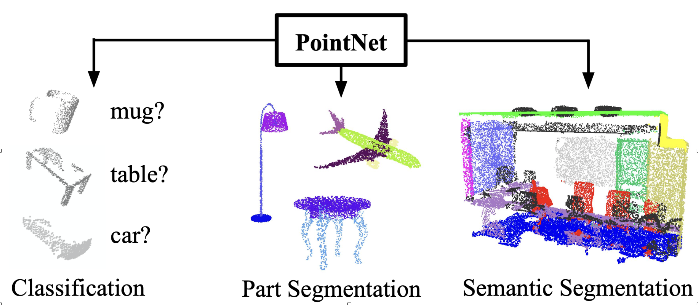
2.2.1.1. Permutation Invariance#
An MLP does implement permutation invariance if this happens:
where \({\cal S}=\{\mathbf{x}_1,\mathbf{x}_2,\ldots,\mathbf{x}_N\}\) is a set of \(N\) points in \(\mathbb{R}^d\) (where \(d=3\) in 3D point clouds) and \(\Pi:\{1,2,\ldots N\}\rightarrow \{1,2,\ldots N\}\) is a function that permutes the order in the points in \({\cal S}\):
For instance, in \(\Pi(\{1,2,3,\ldots N\})=\{2,1,3,\ldots N\}\), \(\Pi\) just permutes the first two elements.
Obviously, there are \(N!\) possible permutations and the MLP has to give the same output. In other words, if the set \({\cal S_{plane}}\) must be classified as a plane, then \(\Pi({\cal S_{plane}})\) must also be classifed as a plane by the same MLP.
The solution is depicted in Fig. 2.5. The PointNet NN is a ground breaking development. Apparently is yet another (huge MLP) but we have some observations:
{kind=link}
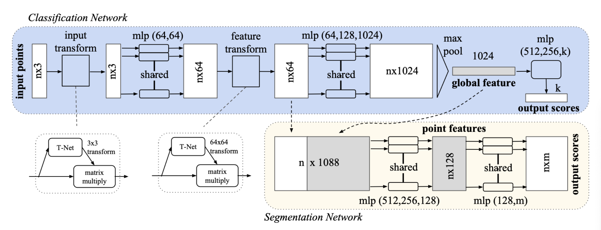
Input. It is a tensor of \(N\times 3\) (stack of \(N\) 3D \((x,y,z)\) points). Note that if we have 3D models all of them are discretized to the same resolution (\(N\) is a constant). In addition, tif two models correspond to the same category (say planes) they are are not pre-aligned, i.e. one is seen as a permutation of the other.
1st T-Net. T-Net is a NN with two objectives: (1) Learn a common \(3\times 3\) transformation (alignment) with all the training point clouds, and (2) apply it to the \(N\times 3\) input.
1st MLP. Transforms the \(N\times 3\) output of the first T-Net into a \(N\times 64\). This is basically necessary in order to add some context to the \((x,y,z)\) points: with \(64\) overall dimensions it is possible to discriminate between corner points and surface points, etc.
2nd T-Net. Scaled version of the 1st one, now with a point cloud of \(N\times 64\).
2nd NLP. Scaled version of the 1st MLP, now going from \(64\) to \(1024\) dimensions.
Max Pooling. This is the invariant part of PointNet. Given the tensor of size \(N\times 1024\) whose rows correspond to extended features of the \((x,y,z)\) points, now collapse into a unique \(1\times 1024\) tensor taking the \(\max\) at each dimension. This simple operation makes that identical input tensors but corresponding to the “same permutation” result in a similar \(1\times 1024\) hash.
Once we have the global hash we can feed a final MLP of send it to feed the segmentation network with also a final MLP.
The solution is depicted in Fig. 2.6. The PointNet++ NN improves PointNet as follows:
{kind=link}
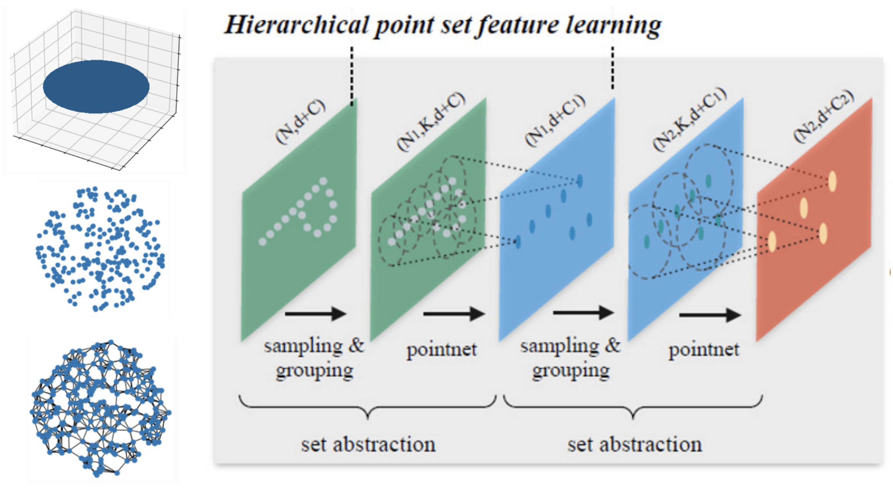
Fig. 2.6 PointNet++. Left: transformation of the 3D model of a table into a point cloud and then into a KNN graph. Right: enriched PointNet architecture where pooling is done according to the neighboring points in the graph. Credit and Pytorch Geometric.#
KNN graph. The input to the NN is not a tensor but a graph where two points are linked if they are among the \(K\) closer neighbors of each point. The nodes contain the \((x,y,z)\) features of the corresponding points.
Discrete Convolution. This is the name of the neighborhood aggregation plus an MLP which allows to capture the local context of each point span in a permutation-invariant way.
Downsampling. Essentially a pooling.
2.2.2. Graphs implement Discrete Convolutions#
Let \(G = (V, E)\) denote a graph, where \(V = \{v_1, v_2, \ldots, v_N\}\) represents the set of \(N\) nodes and \(E \subseteq V \times V\) represents the set of edges. We use the adjacency matrix \(\mathbf{A} \in \{0, 1\}^{N \times N}\) to encode the graph structure, where \(\mathbf{A}_{ij} = 1\) if there exists an edge between nodes \(v_i\) and \(v_j\), and \(\mathbf{A}_{ij} = 0\) otherwise.
Node features and labels. Each node \(v_i\) is associated with a feature vector \(\mathbf{x}_i \in \mathbb{R}^d\), where \(d\) is the dimensionality of the feature space. These features are collectively represented as a matrix \(\mathbf{X} \in \mathbb{R}^{N \times d}\), where the \(i\)-th row corresponds to the feature vector of node \(v_i\). For supervised node classification, a subset of nodes \(V_L \subset V\) have associated labels \(y_i \in \{1, 2, \ldots, C\}\), where \(C\) is the number of classes.
Example. In Fig. 2.7, we show a graph with nodes
and edges
In this case, the graph is undirected which means that if \((i,j)\in E\) then \((j,i)\in E\) and we do not need to denote both edges.
{kind=link}
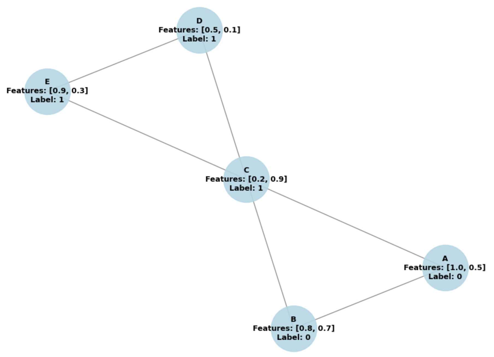
Fig. 2.7 Initial graph with features. Image partially generated by Gemini.#
Features and labels. Note the we show the features \(\mathbf{x}_i\) of each node \(i\) and their ground-truth labels \(y_i\). In this example, we have \(d=2\) features per node and \(C=2\) classes.
Looking at the features, we have that nodes \(A\) and \(B\) are consistently associated with class \(0\): in this class \(\mathbf{x}_i(1)> \mathbf{x}_i(2)\) and \(\mathbf{x}_i(2)\ge 0.5\). Similarly, nodes \(C\) and \(D\) are consistently associated with class \(1\): \(\mathbf{x}_i(1)> \mathbf{x}_i(2)\) and \(\mathbf{x}_i(1)\ge 0.5\). However, the features of node \(C\) place it in between both classes.
Independently of the training-test split (which is irrelevant to this example) a linear separation will be hard in this case, because of node \(C\). Thus, for a simple MLP we will obtain something close to the decision in Fig. 2.8
{kind=link}
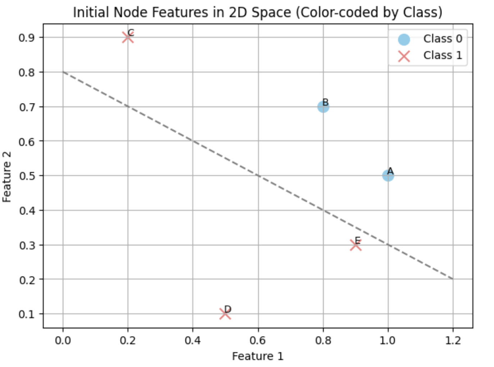
Fig. 2.8 Simple MLP classification. Image partially generated by Gemini.#
Graphs provide local context. The reason of the above lack of performance quite obvious: MLPs deal with node features independently. However, since graphs implement pairwise relations between variables, it is expected that neighboring nodes do have similar properties, in particular their labels. When neighboring tend to share the same label, this is know as homophily.
By ignoring graph edges and the context provided by the neighborhood, an MLP fails to capture the relational patterns that are often indicative of a node’s class in graph-structured data.
Invariant aggregation. Suppose now, that for any node \(\mathbf{v}_i\), we aggregate the features of its neighbors and pass the aggretation, instead of passing directly its features to the MLP. In other words, all we do is to feed the MLP with a *new embedding that accounts for the local context of each node. Such embedding, \(\mathbf{h}_i\), is aggregated in an invariant way wrt the order of the neighbors. This means that we can only use functions such as the SUM, MEAN and the MAX as aggregators:
where \(\mathcal{N}(i)\) denotes the neighbors of node \(v_i\). Note that the features of \(\mathbf{x}_i\) are included in the update, as if there was a self-loop for each node in the graph (as self-attention in Transformers).
Under invariant aggregation, the result \(\mathbf{h}_i\) is the same independently of the order in wich the neighbors are processed. Thus, graphs do have a more flexible coding than sequences.
In Fig. 2.9, we see that the representations \(\mathbf{h}_i\) of nodes \(A/B\) and \(C/D\) collapse in the same point, thus facilitating the MLP decision, and the representation of \(C\) is attracted to the area of \(A\) and \(B\):
{kind=link}
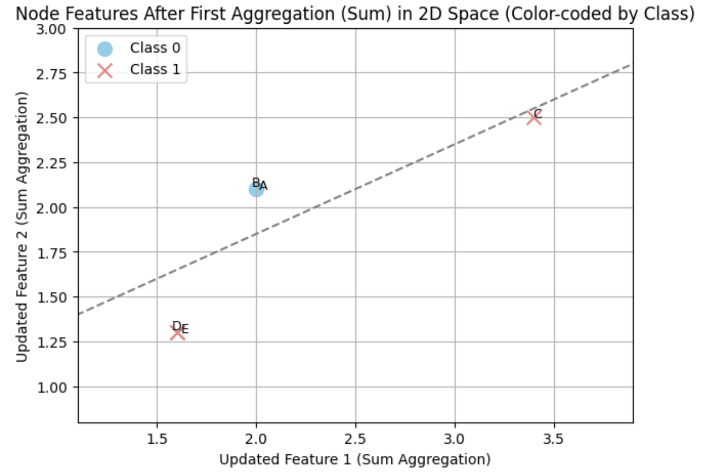
Fig. 2.9 Simple MLP classification of aggregated features. Image partially generated by Gemini.#
Exercise. Given the above example. What is the representation after applying a second aggregation (use sum as invariant and no self-loops)? Explain the result:
First of all, let us compute the embeddings for the first aggregation. We separate aggregation (from neighbors) and update:
\(
\begin{aligned}
&\begin{array}{cccc}
\text{Node} &\text{State} & \text{Neighbors} & \text{Aggregation} & \text{Update} \\\hline
v_A & [1.0\;0.5] & \{B,C\} & [0.8\;0.7]+[0.2\;0.9] & [2.0\; 2.1]\\
v_B & [0.8\;0.7] & \{A,C\} & [1.0\;0.5]+[0.2\;0.9] & [2.0\; 2.1]\\
v_C & [0.2\;0.9] & \{A,B,D,E\} & [1.0\;0.5]+[0.8\;0.7] + [0.5\;0.1] + [0.9\;0.3] & [3.4\;2.5]\\
v_D & [0.5\;0.1] & \{C,E\} & [0.2\;0.9] + [0.9\;0.3] & [1.6\; 1.3]\\
v_E & [0.9\;0.3] & \{C,D\} & [0.2\;0.9] + [0.5\;0.1] & [1.6\; 1.3]\\
\end{array}
\end{aligned}
\)
Note that after the first aggregation is also showed in Fig. 2.9. Two pairs of nodes \((A,B)\) and \((D,E)\) collapse in the same representation, which is good since they are homologs (same class). However, node \(C\) which belongs to class \(1\) does not collapse although it is closer to its homologs than to the other nodes.
Now, supposing that “State” is not projected by an MLP (or simply that such proyection is the identity \(\mathbf{I}\)) we replace the column
“State” by the above results in “Udate” and recompute:
\(
\begin{aligned}
&\begin{array}{cccc}
\text{Node} &\text{State} & \text{Neighbors} & \text{Aggregation} & \text{Update} \\\hline
v_A & [2.0\; 2.1] & \{B,C\} & [2.0\; 2.1]+[3.4\;2.5] & [7.4\;6.7]\\
v_B & [2.0\; 2.1] & \{A,C\} & [2.0\; 2.1]+[3.4\;2.5] & [7.4\;6.7]\\
v_C & [3.4\;2.5] & \{A,B,D,E\} & 2\cdot[2.0\; 2.1] + 2\cdot[1.6\; 1.3] & [10.6\;9.3]\\
v_D & [1.6\; 1.3] & \{C,E\} & [3.4\;2.5] + [1.6\; 1.3] & [6.6\;5.1]\\
v_E & [1.6\; 1.3] & \{C,D\} & [3.4\;2.5] + [1.6\; 1.3] & [6.6\;5.1]\\
\end{array}
\end{aligned}
\)
As we can see, homolog collapses still persists and node \(C\) is still to its category. Under this conditions, an MLP on ‘State’ will make \(C's\) features collapse with those of \(A\) and \(B\) as soon as \(C\) is misclassified.
2.3. GNNs basic architecture#
In short, given an input graph \(G=(V,E)\) (which may change via rewiring), each of the \(L\) layers of a GNN has three components:
Message passing. Each node sends its interal state (its current embedding) to its neighbors (possibily including itsef).
Aggregation. Each node receives a message from its adjacend neighbors. This message is usually weighted by a confidence coefficient. Then, all messages are aggregated using an order invariant operator (SUM, MEAN, MAX).
Update. The new internal state is built both on the aggregation and its projection via an MLP.
All these steps are summarized in Fig. 2.10 where we highlight the last MLP layer for classification/regression:
{kind=link}
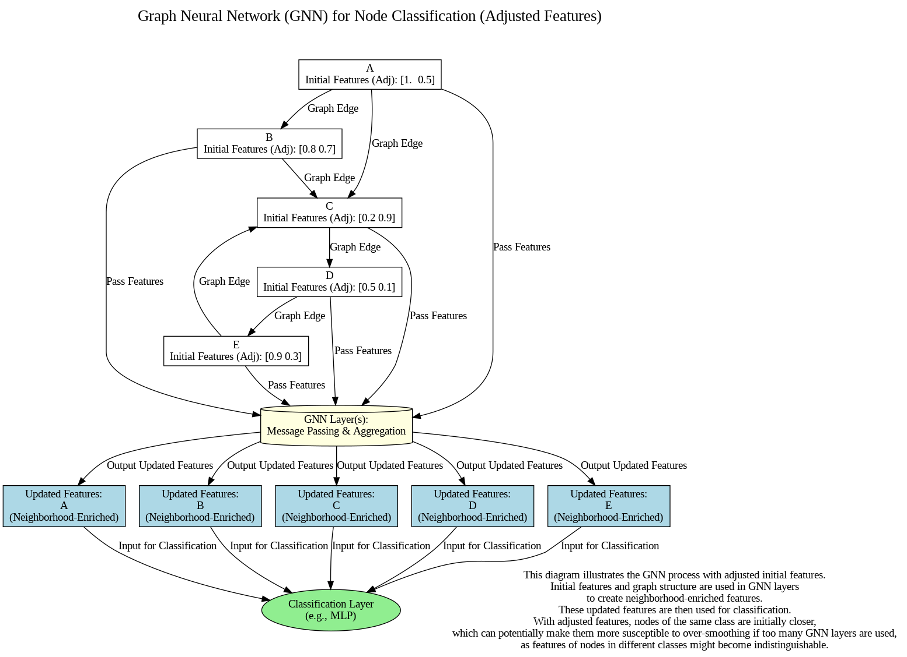
Fig. 2.10 GNN architecture (for the example graph). Image partially generated by Gemini.#
In a more formal way, we have:
which is basically coincident (for the SUM) with
where \(\alpha_{ij}\) are learnable attention coefficients (see below). In short, a GNN layer is an MLP of the aggregation.
In matricial form we have (droping the attention coefficients and biases for the sake of clarity):
where \(\tilde{\mathbf{A}}=\mathbf{A} + \mathbf{I}\) is the adjacency matrix with self-loops (ones in the diagonal). Therefore \(\mathbf{H}^{(l+1)}\) is an \(N\times d^{(l+1)}\) matrix, where \(d^{(l+1)}\) is the output dimension of the \(l-\)th MLP. Then, this matrix encapsulates the new embedding of the nodes in its rows.
In addition, the expression \(\tilde{\mathbf{A}}\mathbf{H}^{(l)}\), where \(\mathbf{H}^{(l)}\) is an \(N\times d^{(l)}\) matrix (with usually \(d^{(l)}\ge d^{(l+1)}\)) which compacts all the aggregations, since:
Note that the matrix \(\tilde{\mathbf{A}}\) is kept constant along all the layers (unless we apply rewiring).
2.4. Graph Attention Networks#
The (above) vanilla GNN was introduced by Kipf & Welling. Later on, Gilmer et al. coined the term Message Passing Neural Networks (MPNNs) and reviewed emerging variants of the vanilla model. In particular, the Kipf-Welling model has an spectral interpretation for modulating message passing (we will get back to this point later on).
Vanilla GNNs (aka Graph Convolutional Networks or GCNs) have an important limitation: they blindly aggregate messages coming from all neighbors:
This is effective in homophilic regimes where neighors do not only share labels but do have similar feature vectors.
In more general settings, however, neighboring features can be quite different even when their corresponding nodes share the same label.
If this constant attention is hold (all messages are born equal) we may bias the aggregation and thus create a sub-optimal latent space.
Graph Attention Networks or GATs, by Velickovic et al., address this problem by computing and learning attention coefficients \(\alpha_{ij}\) as follows:
Given an edge \((i,j)\) in the graph, its un-normalized attention coefficient (after projection of node embeddings \(\mathbf{h}_i\) and \(\mathbf{h}_j\)) are:
where \(\mathbf{a}:\mathbb{R}^d\times \mathbb{R}^d\rightarrow \mathbb{R}\) is a MLP parameterized by \(\mathbf{a}\in\mathbb{R}^{2d}\). Why?
This MLP concatenates the inputs \(\mathbf{W}\mathbf{h}_i\), and \(\mathbf{W}\mathbf{h}_j\) where the notation is
and this is why \(\mathbf{a}\in\mathbb{R}^{2d}\).
Given a concatenation \(\mathbf{W}\mathbf{h}_i||\mathbf{W}\mathbf{h}_j\) the MLP proceeds as follows:
where, in the following, \({\cal N}(i)\) is equivalent by default to \({\cal N}(i)\cup \{i\}\) (includes itself).
In more detail, we have
where \(\text{LeakyReLU}\) denotes the corresponding non-linearity with negative slope.
Once we have computed the \(\alpha_{ij}\) (as in the Transformer), we use them to UPDATE the state:
Finally, as in the Transformer (although omitted by clarity) we may learn different types of attention. This is called multi-head attention and now \(\mathbf{h}'_i\) is the concatenation of \(K\) different attentional results as follows:
In other words, the same message is projected in a different way and modulated by the specific set of coefficients for this \(k\) attentional head. The final result is the concatenation of all the partial results.
Concatenation works well in intermediate GAT layers but if we have a final GAT layer previous to softmaxing, it is better to average the outputs produced by each attention head:
This is summarized in Fig. 2.11. On the left, we illustrate the MLP for computing the attention coefficients. Right: hypothetical graph with \(K=3\) attention heads (different colors). Visualize this as \(K\) superposed graphs whose nodal representation of different colors should be concatenated (or averaged). In this figure, we have preserved the traditional vector notation (arrows).
{kind=link}
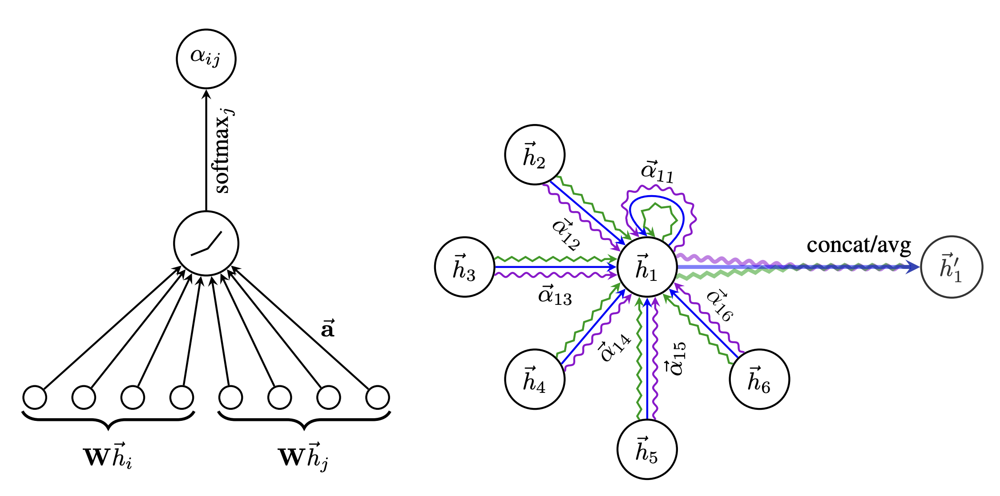
Fig. 2.11 GAT. Image from the original paper: Graph Attention Networks.#
2.5. Homophily vs Heterophily#
2.5.1. The Cora Dataset#
Let us exemplify the advantages of vanilla GNNs vs MLPs and GATs in the homophilic regime with the study of the Cora dataset. This is a graph of 2708 scientific publications as nodes. The nodes are classified into one of \(C=7\) classes attenting to their publication’s type. The features of each node is a 0/1 vector indicating the absence/presence of a word in a dictionary of \(d=1433\) words. There are \(5429\) (directed) links indicating that one papers cites another paper. In Cora we show the largest connected compoment of Cora using undirected edges as in PyTorch Geometric:
{kind=link}
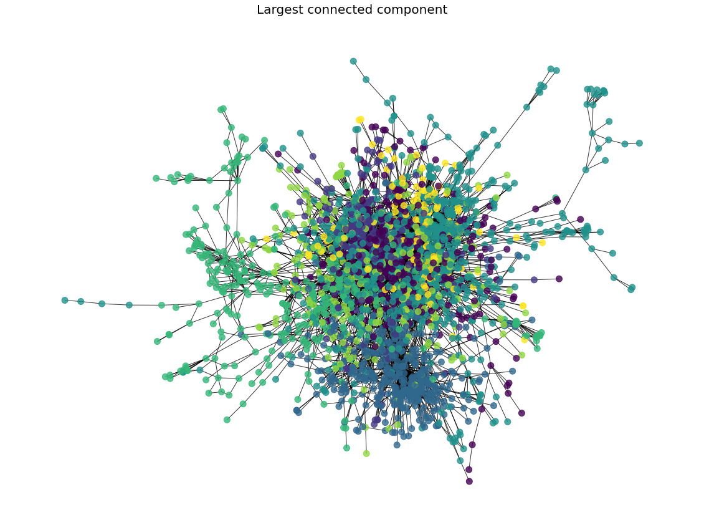
Fig. 2.12 Largest component of the Cora dataset. Image generated by PyTorch Geometric.#
Know your dataset. The basic statistics of Cora are in Fig. 2.13. Note that in addition to the number of nodes and their degree, there are some specifications for the train-test split. In particular, in the following experiment only \(5\%\) of the nodes are used for training.
{kind=link}
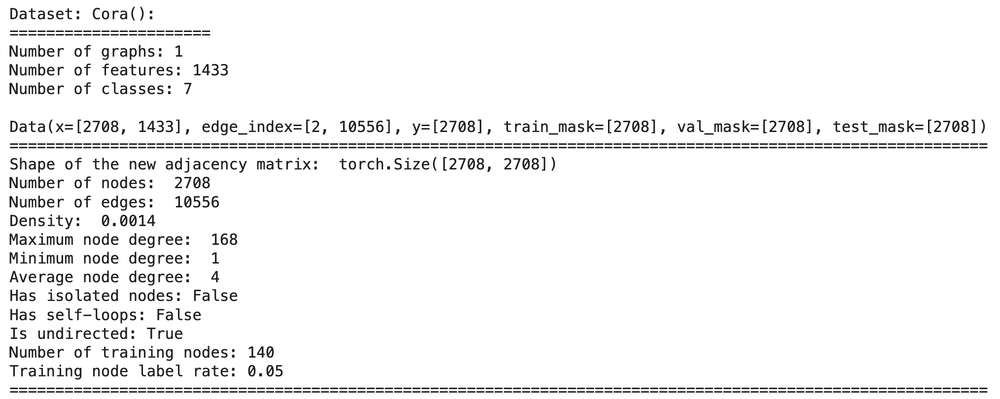
Fig. 2.13 Cora dataset stats. Image generated by PyTorch Geometric.#
Homophily degree. A fundamental statistic for understanding whether GNNs can beat MLPs is the fraction of nodes whose neighbors do have the same class. This is the so-called edge-homophily ratio:
If \(h=0\), it is expected that MLP beats GNNs, whereas for \(h=1\) it is expected the opposite. For Cora, we have that \(h^{Cora}=0.81\) which indicates that aggregation is more promising than MLPs for semi-supervised node classification.
Comparing MLPs, vanilla GNNs and GATs. We follow the general trend of using two layers + softmax. Remember that a MLP can be seen as a sequence of downscaling composing functions taking the initial feature dimension \(\text{num_features}=1433\), mapping the to a \(\text{hidden dimension}=16\) and finally to the \(\text{num_classes}=7\). This follows the quasi-logarithmic downscaling rule \( O(10^3)\rightarrow O(10^1)\rightarrow O(10^0)\;. \)
The Torch snippet is given below:
from torch.functional import F
from torch.nn import Linear
class MLP(torch.nn.Module):
def __init__(self,hidden_channels = 16):
super(MLP, self).__init__()
# 2-layer MLP
self.lin1 = Linear(dataset.num_features, hidden_channels)
self.lin2 = Linear(hidden_channels, dataset.num_classes)
def forward(self, x, edge_index):
# edge_index is not used
x = self.lin1(x)
x = x.relu()
x = F.dropout(x, p=0.5, training=self.training)
x = self.lin2(x)
return x.softmax(dim=1)
For the GCN and GAT layers we use two convolutional layers + softmax. The convolutional layers (respectively \(\text{GCNConv}\) and \(\text{GATConv}\) are provided by Pytorch Geometric):
from torch_geometric.nn import GCNConv
from torch.functional import F
'''
In PyTorch, you define a model by subclassing torch.nn.Module and defining a forward() method which receives input data and returns output data.
The forward() method can use other modules defined in the constructor as submodules, and it can use arbitrary operators on Tensors, including loops and conditional statements.
This approach is very flexible, and you can use it to define models of arbitrary complexity.
'''
class GCN(torch.nn.Module):
'''
Arguments of __init__:
* hidden_channels: The number of hidden units.
* dataset.num_features: The number of input features.
* dataset.num_classes: The number of output classes.
Returns:
* self.conv1: The first GCN layer.
* self.conv2: The second GCN layer.
'''
def __init__(self,hidden_channels = 16):
super(GCN, self).__init__()
# 2-layer GCN
self.conv1 = GCNConv(dataset.num_features, hidden_channels) # 16 hidden units
self.conv2 = GCNConv(hidden_channels, dataset.num_classes) # dataset.num_classes output units
'''
Arguments of forward:
* x: The input features.
* edge_index: The edge indices.
Returns:
* F.softmax(x, dim=1): The output of the model.
'''
def forward(self, x, edge_index):
x = F.relu(self.conv1(x, edge_index)) # ReLU activation
x = F.dropout(x,p=0.5, training=self.training) # Dropout: 50% of the nodes are randomly dropped out during training
x = self.conv2(x, edge_index)
return x.softmax(dim=1) # Log softmax activation
and
from torch_geometric.nn import GATConv
from torch.functional import F
'''
In PyTorch, you define a model by subclassing torch.nn.Module and defining a forward() method which receives input data and returns output data.
The forward() method can use other modules defined in the constructor as submodules, and it can use arbitrary operators on Tensors, including loops and conditional statements.
This approach is very flexible, and you can use it to define models of arbitrary complexity.
'''
class GAT(torch.nn.Module):
'''
Arguments of __init__:
* hidden_channels: The number of hidden units.
* dataset.num_features: The number of input features.
* dataset.num_classes: The number of output classes.
Returns:
* self.conv1: The first GCN layer.
* self.conv2: The second GCN layer.
'''
def __init__(self,hidden_channels = 16):
super(GAT, self).__init__()
# 2-layer GAT
self.conv1 = GATConv(dataset.num_features, hidden_channels) # 16 hidden units
self.conv2 = GATConv(hidden_channels, dataset.num_classes) # dataset.num_classes output units
'''
Arguments of forward:
* x: The input features.
* edge_index: The edge indices.
Returns:
* F.softmax(x, dim=1): The output of the model.
'''
def forward(self, x, edge_index):
x = F.relu(self.conv1(x, edge_index)) # ReLU activation
x = F.dropout(x,p=0.5, training=self.training) # Dropout: 50% of the nodes are randomly dropped out during training
x = self.conv2(x, edge_index)
return x.softmax(dim=1) # Log softmax activation
For the GAT we use a single attention head (set by default)
Latent spaces. We train the above models with the train/test/validaton split of \(48/32/20\): \(48\%\) of the nodes for training, \(32\%\) for testing and \(20\%\) for validations. First we split the nodes in \(80\%\) for training and \(20\%\) for testing. Then we split the training nodes in \(48\%\) for training and \(32\%\) for validation over the \(80\%\) of the nodes.
We perform \(10\) runs with with same random seeds. In Fig. 2.14 we show the t-SNE projections of the respective latent spaces.
{kind=link}
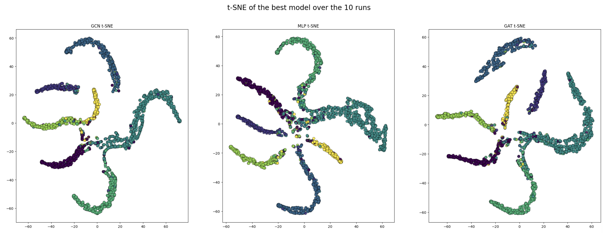
Fig. 2.14 Cora: GCN (vanilla GNN), MLP and GAT latent spaces. Image generated by PyTorch Geometric.#
In Fig. 2.15 we show the respective accuracies. As expected in an homophilic dataset, where the power of aggregation is maximal, both GCN (vanilla GNN) and GAT outperform the MLP. Here are the means and stds for the respective ten runs of each each model:
Note that GCN slightly improves GAT since in the homophilic setting the value of attention is overrided by aggregation. In other words, making different neighboring nodes that tend to be similar has no point. In this case, the GAT tends to inhibit such attention.
{kind=link}
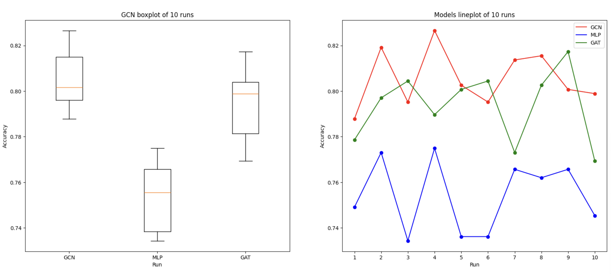
Fig. 2.15 Cora: GCN (vanilla GNN), MLP and GAT accuracies. Image generated by PyTorch Geometric.#
2.5.2. The Texas Dataset#
Texas dataset is included in WebKB dataset. The WebKB is a webpage dataset collected from computer science departments of various universities by Carnegie Mellon University. We use one of the three subdatasets of it, Cornell, Texas, and Wisconsin, where nodes represent web pages, and edges are hyperlinks between them. Node features are the bag-of-words representation of web pages. The web pages are manually classified into \(C=5\) categories, student, project, course, staff, and faculty.
The Texas homophily is quite small: \(h^{Texas}=0.11\). This means that the likelihood of finding two neighboring nodes with the same label is \(0.11\).
{kind=link}
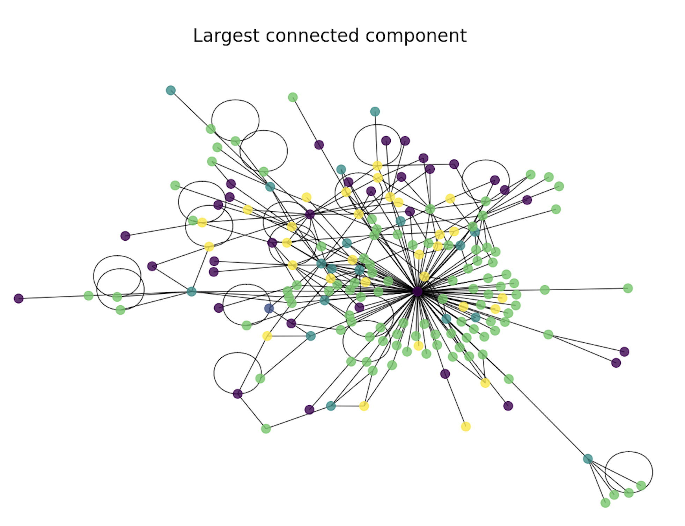
Fig. 2.16 Largest component of the Texas dataset. Image generated by PyTorch Geometric.#
{kind=link}
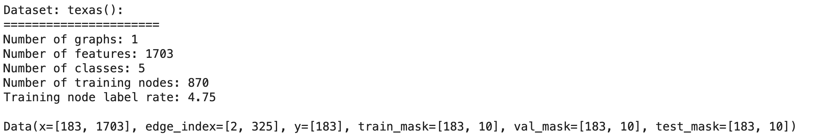
Fig. 2.17 Texas dataset stats. Image generated by PyTorch Geometric.#
Results. Training the three models under the same conditions as above, we obtain the following latent spaces.
{kind=link}
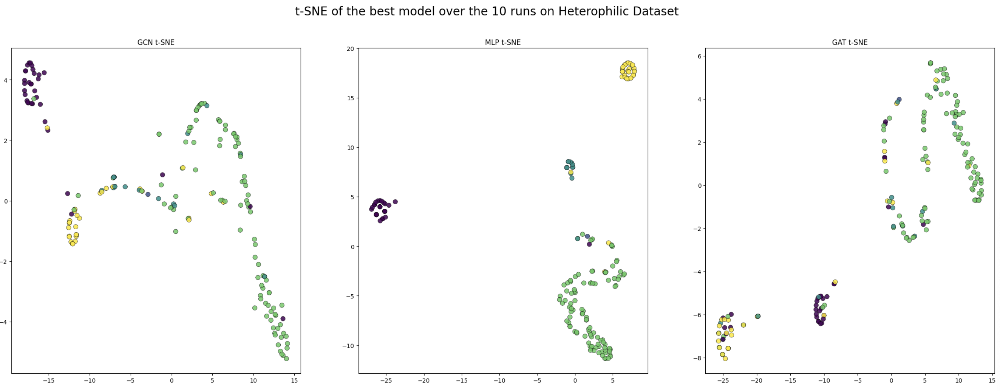
Fig. 2.18 Texas: GCN (vanilla GNN), MLP and GAT latent spaces. Image generated by PyTorch Geometric.#
These latent spaces are quite ilustrative of the power of MLP vs leveraging the graph structure as in GCN of GAT. In this heterophilic regime where is very likely that neighboring nodes have different labels, the best choice is undoubtely the MLP:
{kind=link}
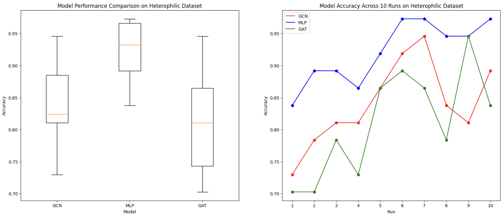
Fig. 2.19 Texas: GCN (vanilla GNN), MLP and GAT accuracies. Image generated by PyTorch Geometric.#
Indeed, the GCN outperforms the GAT. However, in general terms, GATs tend to have a similar performance to that of the MLP. Note that herein we are using a single attention head. Increasing the number of heads improves the results but not enough to beat the MLP in general.
2.5.3. Solving Heterophily#
Solving the heterophilic problem seems a long shot for GATs. The main reason is that GATs cannot jump neighbors to find homologs. This is the case of Diffusion-Jump GNNs. The basic architecture of networks are summarized in Fig. 2.20:
{kind=link}
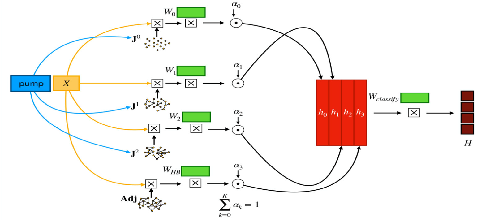
Fig. 2.20 Diffusion-Jumps GNNs. Multi-hop attention.#
The ingredients of the approach are as follows:
Multi-Hop arquitecture. Instead of stacking GNN layers, we combine different layers in parallel (vertically). Each layer encodes a jump over the input graph. The first one \(J^0\) corresponds to the MLP (no jump). Then, we have \(J^1,J^2,\ldots,J^K\).
Distance-slicing. The jump order \(0,1,2,\ldots,K\) is given by slicing the distances between nodes. Thus, layer \(J^k\) links nodes whose distance is greater than those linked at \(J^{k-1}\) and smaller or equal than those linked at \(J^{k+1}\). Distances are provided by a method called diffusion (basically a random-walk distance).
Adjacency. The original adjacency, denoted jump \(J^K\) is added to deal with homophilic graphs, where no jump is required. In advance, we do not know whether the graph is homophilic or not.
Attention coefficients Each layer \(k\) produces an embedding \(\mathbf{h}_k\) and we learn attention coefficients \(\alpha_k\) so that the best combination of jumps is used in classification. This adds flexibility to the classifier. Note that \(\sum_{k=1}^K\alpha_k=1\) as in softmax.
{kind=link}
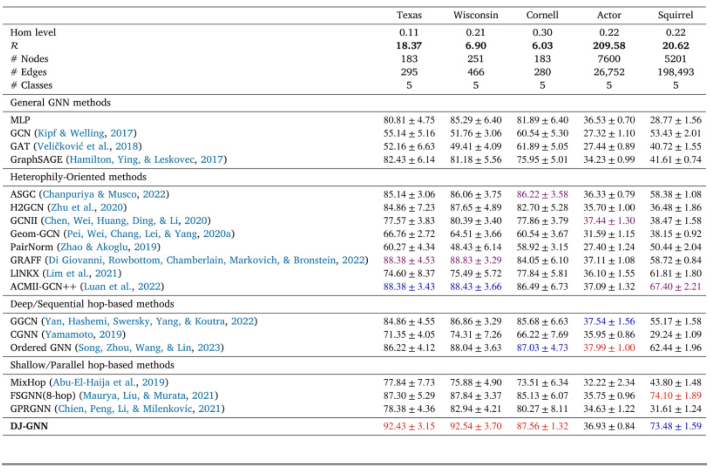
Fig. 2.21 Diffusion-Jumps GNNs performance wrt alternatives.#
In Fig. 2.21, we show that Diffusion-Jump GNNs outperform the alternatives for many heterophilic graphs, in particular the MLP.
3. Algorithmic Neuralization#
3.1. Neural Algorithmic Reasoning#
Neural Algorithmic Reasoning (NAR) stands for the simulation/approximation of algorithms via neural architectures. In this regard, it is key to:
Envision the algorithm \({\cal A}\) as a function \({\cal A}:\mathbf{I}\rightarrow\mathbf{O}\) which maps inputs to outputs.
Given the inputs in \(\mathbf{I}\), the algorithm \({\cal A}\) is a computable function: it basically (i) manipulates the input, (ii) builds internal/auxiliar variables, and (iii) produces the desired output in \(\mathbf{O}\).
Find a Neural Network that aligns well with \({\cal A}'s\) computations. What does it mean?
3.2. Algoritmic Alignment#
The best example of algorithmic alignment is Dynamic Programing (DP). Actually, DPs and GNNs interplay happens as follows:
Implicit graph structure. Many DP algorithms (shortest path, MST) operate naturally on a graph, but all of them can be set as a multi-stage graph where local decisions become part of optimal ones. For instance, the equation
encodes a relaxation step where the shortest distance \(x[v]\) between vertex \(v\) and origin \(s\) is updated on behalf of is neighbors \(u\) and the weigths \(w(u,v)\). Other non-graph algorithms such as the DP solver of the knapsack problem can be possed in a similar way.
Nodes and messages. The target of NAR is to chase a nodal latent space whose decoding mimics the performance of the classical algorithm. These latent representations are proxys of the variables and they are placed in the nodes. Then, their update can be seen as message passing + invariant aggregation. This is illustrated in Fig. 3.1.
{kind=link}
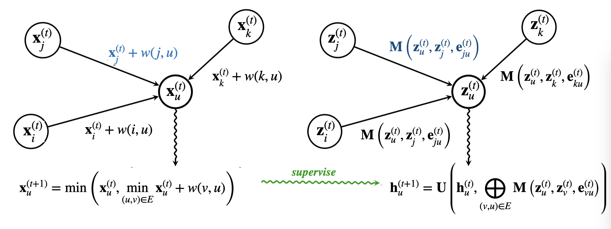
Fig. 3.1 Bellman-Ford Alignment. Adapted from Neural Execution of Algorithms.#
Note that \(\mathbf{U}\) and \(\mathbf{M}\) are MLPs and \(\bigoplus\) is the invariant aggregation function (MAX,SUM,MEAN).
NAR is Data-driven. Despite the nice alignment between GNNs and DP algorithms, NAR trains these GNNs by scrapping the algorithm variables (e.g. distances, pointers) and finding latent spaces whose reconstruction matches the desired result via backpropagation. As NAR does not ensures that the resulting NN reduces the complexity of the original algorithm, it only provides an explanation of how the GNN generalizes to unseen instances.
3.3. Combinatorial Neuralization#
In this subject, we shift the focus to combinatorial problems, where neuralization is more challenging. These problems are usually NP-Hard. If so, there exist polynomial approximations for some of them. Think for instance of the normalized cut (optimal bipartition), which is nicely approximated by the Fiedler vector. In this case, the polynomial approximation relies on computing the second eigenvector of the graph Laplacian.
Very recently, Ahmed Begga’s PhD Thesis has addressed the problem of neuralizing spectral clustering. Some inspiring ideas:
Mathematical formulation. Computing the main \(k\) eigenvectors \(\mathbf{x}_i\), columns of the \(|V|\times k\) matrix \(\mathbf{X}\), of the normalized Laplacian \({\cal L}\) has a closed mathematical formulation:
In other words, \(f(\mathbf{X})\) is a loss that we have to minimize in order to learn \(\mathbf{X}\) whose columns must be mutually perpendicular. Numerical solvers such as the Lanczos method proceed in a different way, but they cannot scale for very large graphs.
Double loss. From a GNN viewpoint, the columns of \(\mathbf{X}\) must be generated by \(|V|\) embeddings using message passing + invariant aggregation. These embeddings must be, in general, not only compatible with the \(L_{eig}:=f(\mathbf{X})\) loss, but also with that of downstream task (node classification, graph classification, link prediction) that the GNN attemps to solve. We minimize \(L_{eig} + L_{task}\).
Empirical Eigenvectors. Minimizing \(L_{eig} + L_{task}\) leads to data-driven eigenvectors \(\mathbf{X}\). In other words, they are orthogonal but biased towards solving the task. For instance, they absorb the label information to contribute to classify graphs or to be good positional encoders in Graph Transformers.
Generalization. Learning eigenvectors is not yet graph dependent since they can be transferred to other graphs with similar spectral properties. The main questions are (1) what graphs support a better approximation of their eigenvectors and (2) how expressive is the generalization.
In the following, we are going to apply these lessons to neuralize the Maximum Clique problem, another NP-Hard problem yet studied in previous courses.
3.3.1. The Maximum Clique#
Maximum Clique. Remember that given an undirected graph \(G=(V,E)\), with \(n=|V|\) nodes and edges \(E\subseteq V\times V\), whe have:
A clique is a subset \(C\subseteq V\) of nodes where all nodes are mutually adjacent. In other words, they induce a complete subgraph \(K_{|C|}\) of size \(|C|\) in \(G\).
A maximal clique is a clique not contained in another larger clique.
The maximum clique is the maximal clique with the largest cardinality.
For instance, for the graph in Fig. 3.2, with \(n=5\) nodes, the maximum clique is given by \(U = \{1,2,3\}\) with cardinality \(3\). However, there are two maximal cliques: (a) the one defined by the edge \((3,4)\), with cardinality \(2\) and (b) the one defined by the isolated node \(5\), with obvious cardinality \(1\).
{kind=link}
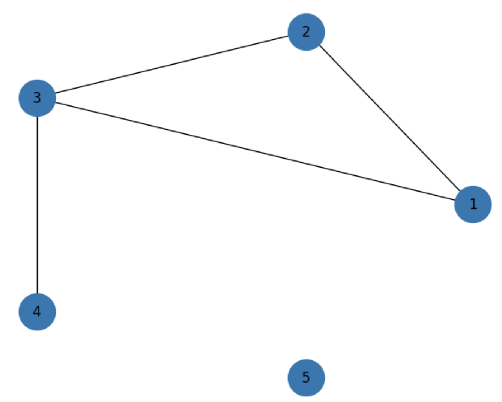
Fig. 3.2 Example graph with \(3\) maximal cliques and one maximum clique.#
NP-Hard. The problem of finding the maximum clique in \(G\) is known to be NP-Hard since: a) its brute-force method requires exploring all the \(2^n\) subsets of \(G\) (subsetness flavor), and b) there is not a polynomial algorithm known, solving it exactly.
3.3.2. Bron-Kerbosh Algorithm#
The Bron-Kerbosh (BK) algorithm enumerates all the maximal cliques of an input graph \(G\).
Algorithm 3.1 (Bron-Kerbosh)
Inputs Given a graph \(G=(V,E)\)
Output Returns all its maximal cliques.
function \(\text{BK}\)(\(R\), \(P\), \(X\)):
if \(P=\emptyset\) and \(X=\emptyset\) then return \(R\)
for each \(v\in P\):
\(\text{BK}\)(\(R\cup \{v\}\), \(P\cap {\cal N}(v)\), \(X\cap {\cal N}(v)\))
\(P = P-\{v\}\)
\(X = X\cup \{v\}\)
The algorithm is initially called with \(\text{BK}(\emptyset,V,\emptyset)\) showing that:
\(R\) is the current clique. This set will grow in each recursive call (step \(2.1\)).
\(P\) is the candidate set. This set considers only the neighours of the current vertex \(v\) (step \(2.1\)) and \(v\) is excluded from it when a recursive call backtracks (step \(2.2\)).
\(X\) is the exclusion set. This set considers only the neighours of the current vertex \(v\) that have been yet excluded (step \(2.1\)) and \(v\) is included in it when a recursive call backtracks (step \(2.3\)).
Backtracking happens when either \(P\neq\emptyset\) or \(X\neq\emptyset\).
Applying the algorithm to Fig. 3.2, the resulting execution tree in Fig. 3.3 shows how the maximal cliques (red leaves of the tree) are built level-by-level, i.e. increnentally.
In the worst case, this incremental execution explores the \(2^{n}\) subsets of \(V\) to determine whether they form a clique as well as its corresponding size.
{kind=link}
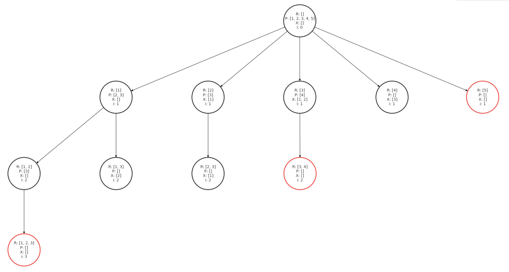
Fig. 3.3 BK algorithm for the toy graph. Red leaves are maximal cliques.#
In the following table, we sketch the recursion. From left to right, each column is a new recursive call. From right to left we recover the call’s result (callback) and lauch a new call if possible.
\( \begin{aligned} \begin{array}{llll} \text{BK}(\emptyset,\{1,\ldots,5\},\emptyset) & & &\\ & \text{BK}(\{1\},\{2,3\},\emptyset) & \\ & &\text{BK}(\{1,2\},\{3\},\emptyset) & \\ & & &\text{BK}(\{1,2,3\},\emptyset,\emptyset)\\ & & &\textbf{return}\\ & & & R=\{1,2,3\}\\ & & P=P-\{3\} = \emptyset & \\ & & X=X\cup\{3\} = \{3\} & \\ & P=P-\{2\} = \{3\} & \\ & X=X\cup\{2\} = \{2\} & \\ & &\text{BK}(\{1,3\},\{\},\{2\}) & \\ & &\text{out:}\; P=\emptyset, X\neq\emptyset & \\ & P=P-\{3\} = \{\} & \\ & X=X\cup\{3\} = \{2,3\} & \\ & \text{out: end loop} & \\ P=P-\{1\} = \{2,\ldots,5\} & \\ X=X\cup\{1\} = \{1\} & \\ v=2 &\\ {\cal N}(2)=\{1,3\} &\\ P\cap {\cal N}(2) = \{3\} &\\ & \text{BK}(\{2\},\{3\},\{1\}) & \\ & &\text{BK}(\{2,3\},\emptyset,\{1\}) & \\ & &\text{out:}\; P=\emptyset, X\neq\emptyset & \\ & P=P-\{3\} = \{\} & \\ & X=X\cup\{3\} = \{1,3\} & \\ & \text{out: end loop} & \\ P=P-\{2\} = \{3,4,5\} & \\ X=X\cup\{2\} = \{1,2\} & \\ v=3 &\\ {\cal N}(3)=\{1,2,4\} &\\ P\cap {\cal N}(3) = \{4\} &\\ X\cap {\cal N}(3) = \{\} &\\ & \text{BK}(\{3\},\{4\},\{1,2\}) & \\ & &\text{BK}(\{3,4\},\emptyset,\emptyset) & \\ & &\textbf{return}\;R=\{3,4\}\\ & P=P-\{4\} = \{\} & \\ & X=X\cup\{4\} = \{1,2,4\} & \\ & \text{out: end loop} & \\ P=P-\{3\} = \{4,5\} & \\ X=X\cup\{3\} = \{1,2,3\} & \\ v=4 &\\ {\cal N}(4)=\{3\} &\\ P\cap {\cal N}(4) = \{\} &\\ X\cap {\cal N}(4) = \{3\} &\\ & \text{BK}(\{4\},\emptyset,\{3\}) & \\ & \text{out:}\; P=\emptyset, X\neq\emptyset & \\ P=P-\{4\} = \{5\} & \\ X=X\cup\{4\} = \{1,2,3,4\} & \\ v=5 &\\ {\cal N}(5)=\{\} &\\ P\cap {\cal N}(4) = \{\} &\\ X\cap {\cal N}(4) = \{\} &\\ & \text{BK}(\{5\},\emptyset,\emptyset) & \\ & \textbf{return}\;R=\{5\}\\ P=P-\{5\} = \{\} & \\ X=X\cup\{5\} = \{1,2,3,4,5\} & \\ \text{out: end loop} & \\ \text{end algorithm} & \\ \end{array} \end{aligned} \)
The recursion is initiated by setting R and X to be the empty set and P to be the vertex set of the graph. Within each recursive call, the algorithm considers the vertices in P in turn; if there are no such vertices, it either reports R as a maximal clique (if X is empty), or backtracks. For each vertex v chosen from P, it makes a recursive call in which v is added to R and in which P and X are restricted to the neighbor set N(v) of v, which finds and reports all clique extensions of R that contain v. Then, it moves v from P to X to exclude it from consideration in future cliques and continues with the next vertex in P.
3.3.3. The Motzkin-Strauss Relaxation#
One of the more intriguing aspects of the polinomial approximators for NP-Hard problems is that they are contiuous: the original discrete problem is transformed into a continous one to avoid the combinatorial explosion.
For the Maximum Clique, the Bron-Kerbosk algorithmic enumeration takes \(O(2^n)\) steps in the worst case since it builds the solution step-by-step, i.e. incrementally.
However, a continuous version of Bron-Kerbosh should suggest to explore a complete solution at a time.
How can this be done?
The simplex. Consider, for instance, the cherry graph in Fig. 3.4. Since the graph has three vertices, \(n=3\), we are going to encode a candidate clique as a 3-dimensional vector \((x_1,x_2,x_3)\) where the component \(x_i\) encodes the probability that the vertex \(i\) belongs to the clique. As a result, we have \(x_1 + x_2 + x_3=1\) and \(x_i\ge 0\) for \(i=1,2,3\). This space, denoted as \(\Delta_3\), and encoding all the probability distributions of \(3\) variables is called the simplex.
Let us focus on Fig. 3.4:
{kind=link}
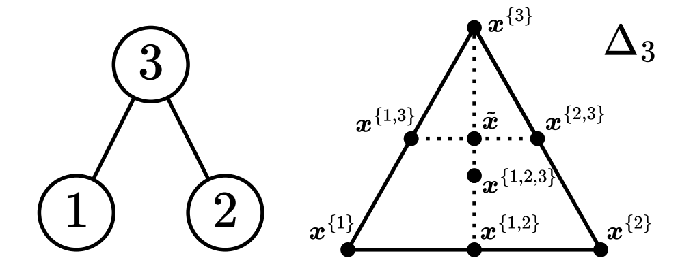
Fig. 3.4 The cherry graph and its simplex. Credit: from Beretta et al.#
First-order cliques. As we have \(n=3\) nodes, the simplex can be represented by a triangle. The vertices of these triangle are respectively \(\mathbf{x}^{\{1\}}=(1,0,0)\), \(\mathbf{x}^{\{2\}}=(0,1,0)\) and \(\mathbf{x}^{\{3\}}=(0,0,1)\). These vertices encode cliques of 1 node, and the node is the one whose index is \(1\).
Second-order cliques. The cherry graph has 2 cliques of size 2: \(\{1,3\}\) and \(\{2,3\}\). These cliques are encoded as follows: \(\mathbf{x}^{\{1,3\}}=(0.5,0,0.5)\) and \(\mathbf{x}^{\{2,3\}}=(0,0.5,0.5)\). Note that this is because the cliques do represent probability distributions.
Third-order cliques. Since \(n=3\), it could be possible to have a clique of size 3: if the edge \((1,3)\) does exist we should have that \(\mathbf{x}^{\{1,2,3\}}=(\frac{1}{3},\frac{1}{3},\frac{1}{3})\) is a valid clique where each node has the same probability of being in it.
Although there are not third-order cliques in the cherry graph, the simplex \(\Delta_3\) includes points that encode them. This is the problem of a continuous representation: all the possible cliques of a graph with \(n\) nodes are encoded in \(\Delta_n\) but they do not necessarilly exist.
The cost function. Given the simplex as the search space of our maximum clique, we should design a cost function \(f(\mathbf{x})\) for \(\mathbf{x}\in\Delta_n\) which is maximum for large cliques. But only those exixting in the graph!
Not surprisingly,a good candidate is the (quadratic) function \(\mathbf{x}^T\mathbf{A}\mathbf{x}\), where \(\mathbf{A}\) is the adjacency matrix. Why?
Out of the simplex. The characteristic vector \(\mathbf{x}\in\{0,1\}^n\), encodes of a subset \(U\subseteq V\), if we set \(x_i=1\) if \(i\in U\) and \(x_i=0\) otherwise. Then, \(\mathbf{x}^T\mathbf{A}\mathbf{x}\) counts twice the number of edges between the nodes in \(U\).
Intuition. Let \(\mathbf{A}\) be symmetric with zero diagonal (the graph is undirected and it does not have self-loops). Then, each row \(i\) of the column vector \((\mathbf{A}\mathbf{x})_i\) tells us how many neighbors of node \(i\) do belong to the subset \(U\) encoded by \(\mathbf{x}\).
As an example, consider the adjacency of the cherry graph:
and the column vector \(\mathbf{x}=[1\;1\;0]^T\), encoding the subset \(U=\{1,2\}\) we have
Now, for deciphering the meaning of \(\mathbf{x}^T\mathbf{A}\mathbf{x}\) in this setting, take now the “square” in our example:
showing that the elements \(U=\{1,2\}\) are not connected. In other words, there is no edge between them!
However, if we include node 3 in the set, we have (for \(U=\{1,2,3\}\)) and \(\mathbf{x}=[1\;1\;1]^T\):
And now the “square” is
showing that there are \(2\) edges between the nodes in \(U\).
Proof. Since \(A_{ij}=1\) when there is an edge between \(i\) and \(j\), the expression \(\mathbf{x}^T\mathbf{A}\mathbf{x}\) can be rewritten as follows:
Note that in the above expression we count the undirected edge \((i,j)\) twice (as \((i,j)\) and as \((j,i)\)) if \(\mathbf{A}\) is symmetric.
In the simplex. Let \(C = \{v_1,v_2,\ldots,v_k\}\) a clique of size \(k\). The simplex coordinates of the \(n\ge k\) nodes are: \(\frac{1}{k}\) if the vertex belongs to \(C\) and \(0\) otherwise.
Since \(x_i\) is not zero only for \(i\in C\) we have:
As in a clique of size \(k\), every vertex is linked with \(k-1\) other vertices, we can rewrite the above expression as
How to evaluate the above double sum? For each i, there are \(k-1\) elements in C different from it. Therefore, the double sum is \(k\cdot (k-1)\):
As a result, for \(\mathbf{x}\) encoding a clique we have:
As \(k\) increases, its inverse decreases and then \(\mathbf{x}^T\mathbf{A}\mathbf{x}\) grows with the size of the clique!
Exercise. Given \(K_3\) (the complete graph with \(n=3\) vertices), describe its simplex and compute the values of the quadratic loss \(f(\mathbf{x})=\mathbf{x}^T\mathbf{A}\mathbf{x}\) for all its cliques:
Note that \(K_3\) is nothing but the cherry graph with an additional undirected edge \((1,2)\). Then its adjacency is:
\(
\mathbf{A}=
\begin{bmatrix}
0 & 1 & 1\\
1 & 0 & 1\\
1 & 1 & 0\\
\end{bmatrix}
\)
First-order cliques. These are the three vertices of the simplex: \(\mathbf{x}^{\{1\}}=(1,0,0)\), \(\mathbf{x}^{\{2\}}=(0,1,0)\) and \(\mathbf{x}^{\{3\}}=(0,0,1)\). Note that \(f(\mathbf{x})=\mathbf{x}^T\mathbf{A}\mathbf{x}=1-\frac{1}{1}=0\) for all of them. Simply check it as follows:
\(
\begin{bmatrix}
1 & 0 & 0\\
\end{bmatrix}
\cdot
\begin{bmatrix}
0 & 1 & 1\\
1 & 0 & 1\\
1 & 1 & 0\\
\end{bmatrix}\cdot
\begin{bmatrix}
1 \\
0 \\
0 \\
\end{bmatrix} =
\begin{bmatrix}
1 & 0 & 0\\
\end{bmatrix}\cdot
\begin{bmatrix}
0 \\
0 \\
1 \\
\end{bmatrix} = 1\cdot 0 + 0\cdot 0 + 0\cdot 1 = 0\;.
\)
Second-order cliques. One per edge in \(K_3\): \(\mathbf{x}^{\{1,2\}}=(\frac{1}{2},\frac{1}{2},0)\), \(\mathbf{x}^{\{1,3\}}=(\frac{1}{2},0,\frac{1}{2})\) and \(\mathbf{x}^{\{2,3\}}=(0,\frac{1}{2},\frac{1}{2})\). Note that \(f(\mathbf{x})=\mathbf{x}^T\mathbf{A}\mathbf{x}=1-\frac{1}{2}=0.5\) for all of them. Simply check it as follows:
\(
\begin{bmatrix}
\frac{1}{2} & \frac{1}{2} & 0\\
\end{bmatrix}
\cdot
\begin{bmatrix}
0 & 1 & 1\\
1 & 0 & 1\\
1 & 1 & 0\\
\end{bmatrix}\cdot
\begin{bmatrix}
\frac{1}{2} \\
\frac{1}{2} \\
0 \\
\end{bmatrix} =
\begin{bmatrix}
\frac{1}{2} & \frac{1}{2} & 0\\
\end{bmatrix}\cdot
\begin{bmatrix}
\frac{1}{2} \\
\frac{1}{2} \\
1 \\
\end{bmatrix} = \frac{1}{2}\cdot \frac{1}{2} + \frac{1}{2}\cdot \frac{1}{2} + 0\cdot 1 = \frac{1}{4} + \frac{1}{4} = \frac{1}{2} = 0.5\;.
\)
Third-order cliques. The one given by the three vertices: \(\mathbf{x}^{\{1,2,3\}}=(\frac{1}{3},\frac{1}{3},\frac{1}{3})\). Note that \(f(\mathbf{x})=\mathbf{x}^T\mathbf{A}\mathbf{x}=1-\frac{1}{3}=\frac{2}{3}\approx 0.6666\). Simply check it as follows:
\(
\begin{bmatrix}
\frac{1}{3} & \frac{1}{3} & \frac{1}{3}\\
\end{bmatrix}
\cdot
\begin{bmatrix}
0 & 1 & 1\\
1 & 0 & 1\\
1 & 1 & 0\\
\end{bmatrix}\cdot
\begin{bmatrix}
\frac{1}{3} \\
\frac{1}{3} \\
\frac{1}{3} \\
\end{bmatrix} =
\begin{bmatrix}
\frac{1}{3} & \frac{1}{3} & \frac{1}{3}\\
\end{bmatrix}\cdot
\begin{bmatrix}
\frac{2}{3} \\
\frac{2}{3} \\
\frac{2}{3} \\
\end{bmatrix} = 3\cdot \frac{1}{3}\cdot \frac{2}{3} = \frac{2}{3}\approx 0.6666\;.
\)
Continuous formulation of the Maximum Clique. Given an undirected graph \(G=(V,E)\) with nodes \(V=\{1,2,\ldots,n\}\), edges \(E\subseteq V\times V\), and adjacency matrix \(\mathbf{A}\), the maximum clique is given by the following point in the simplex \(\Delta_n\):
If the clique number \(\omega(G)=k\), i.e. the maximum clique \(C\) has size \(k\), then \(f(\mathbf{x})= 1 - \frac{1}{k}\) and \(\mathbf{x}^{\ast}\) is as follows:
Spurious solutions. As the simplex \(\Delta_n\) is continuous, it is possible that do exist maximizers of \(f(\mathbf{x})=\mathbf{x}^T\mathbf{A}\mathbf{x}\) that do not correspond to maximum cliques. This is the case of \(\tilde{\mathbf{x}}=(\frac{1}{4},\frac{1}{4},\frac{1}{2})\) in Fig. 3.4 (the cherry graph). Let us see what is the cost of this solution:
Note that the cherry graph does not have cliques of size \(3\) and all their cliques of size \(2\) (\(\mathbf{x}^{\{1,3\}}=(\frac{1}{2},0,\frac{1}{2}))\) and \(\mathbf{x}^{\{2,3\}}=(0,\frac{1}{2},\frac{1}{2})\)) have also a cost of \(0.5\) (please check).
Therefore, spurious solutions are solutions having maximal value but their representation do not correspond to a maximum clique.
Modified cost function. The maths linking the Maximum Clique problem with the maximization of \(\mathbf{x}^T\mathbf{A}\mathbf{x}\) date from the sixties and they are due to Motzkin-Strauss. In the nineties, with the birth of energy minimization methods, they were updated by my colleague Marcello Pelillo et al.. In this regard, they proposed the following cost function for avoiding spurious solutions:
We have two intepretations for the new cost function:
Regularization. As \(\mathbf{x}^T\mathbf{x}=\sum_{i}x_i^2\), if two solutions do have the same \(f(\mathbf{x})\) value, we prefer the one with the largest modulus (i.e. smallest values of their denominators). In the above example (cherry graph), note that
Half self-loop. As \(\hat{f}(\mathbf{x})=\mathbf{x}^T\left(\mathbf{A} + \frac{1}{2}\mathbf{I}\right)\mathbf{x}\), we bias the adjacency by introducing self loops as in a GNN. The weight of each self loop is formally \(1/2\) and this is equivalent to regularization.
Whereas regularizarion reduces the costs of spurious solutions, self-loops do the same by enforcing self-loops in the diagonal of the adjacency.
3.3.4. Replicator Dynamics#
The simplex and the cost function associated with it is just the first step to solve the Maximum Clique problem, even in a continuous way. We need a continous search procedure to find \(\mathbf{x}^{\ast}\).
Replicator equation. We are going to play an evolutionary game known as the replicator equation.
Suppose we want to find the point \(\mathbf{x}^{\ast}\) starting from any other point \(\mathbf{x}(0)\) by means of a (continous) trajectory:
that we expect to converge to \(\mathbf{x}^{\ast}\). The trajectory is governed by the following differential equations (one per dimension):
where
In the above formulation, we have that:
\(x_i(t)\) defines the proportion of type \(i\) at time \(t\) in a population: \(\sum_i x_i(t)=1\) as in the simplex.
\(\pi_i(t)\) defines the fitness of type i at time \(t\).
\(\phi(t)\) defines the average fitness of all the types.
This formulation models natural selection since strategies (types) with fitness larger than the average increase in frequency whereas the others decrease along time (assuming a static population).
Note that the process stops when \(dx_i(t)=0\) for all \(i\). In other words, the process converges to a types distribution (point in the \(\Delta_n\) simplex) where \(\pi_i(t)=\phi_i(t)\) for all \(i\).
Replicator dynamics for the Maximum Clique. In order to apply the above equations to find \(\mathbf{x}^{\ast}\) we define \(\pi_i(t)\) and \(\phi_i(t)\) as follows:
Payoff matrix. The adjacency \(\mathbf{A}\) is assumed to be a payoff matrix. . A component \(A_{ij}\) (or in general \(W_{ij}\ge 0\))represents the payoff of an individual playing strategy \(i\) against an opponent playing strategy \(j\).
This is a simple linear model that means that payoff is “proportional” to current fitness
Therefore: given \(\pi(t)=\mathbf{A}\mathbf{x}(t)\), \(\pi_i(t)\) means the expected payoff for \(i\) since \(\pi_i(t)=\sum_{j=1}^nA_{ij}x_j(t)\).
Then, the mean payoff for the entire population is
Therefore, for the Maximum Clique we have the following equations:
As a result
Then we normalize \(\mathbf{x}(t+1)\) so that it is still inside the simplex \(\Delta_n\):
These calculations are translated to the following algorithm (Replicator Dynamics):
Algorithm 3.2 (Replicator Dynamics)
Inputs Given an initial \(\mathbf{x}(0)\in\Delta_n\)
Output Convergence point \(\mathbf{x}^{\ast}=\mathbf{x}(T)\) after \(T\) generations.
\(dt = 0.001\)
for \(t=0,1,\ldots,T-1\):
\( d\mathbf{x}(t) = \mathbf{x}(t)\ast\left(\mathbf{A}\mathbf{x}(t)-\mathbf{x}(t)^T\mathbf{A}\mathbf{x}(t)\right)\;. \)
\(\mathbf{x}(t+1) = \mathbf{x}(t) + d\mathbf{x}(t)\cdot dt\;.\)
\(\mathbf{x}(t+1)=\frac{\mathbf{x}(t)}{\sum_{i=1}^n x_i(t+1)}\;.\)
return \(\mathbf{x}(T)\)
where \(\ast\) is the componentwise product: \(\mathbf{x}\ast\mathbf{y}=\sum_ix_iy_i\).
Initialization. The usual (neutral) initialization for this algorithm is \(\mathbf{x}(0) = (\frac{1}{n},\frac{1}{n},\ldots,\frac{1}{n})\) (this is the uniform distribution or barycenter).
Iterations. In this version, both \(T\) and \(dt\) specify a fixed number of iterations. The algorithm can be improved by stopping when \(\max_i|x_i(t+1)-x_i(t)|<\epsilon\), where \(\epsilon\) is a tolerance.
Example. Let us get the graph in Fig. 3.2 with \(n=5\) nodes and explore its replicator dynamics.
The adjacency is as follows:
The barycenter is \(\mathbf{x}(0)=\left(\frac{1}{5},\frac{1}{5},\frac{1}{5},\frac{1}{5}\right)\).
Using \(dt=0.01\) and \(T=5000\), the first \(5\) points of the trajectory are:
[[0.2 0.2 0.2 0.2 0.2 ]
[0.20016 0.20016 0.20056 0.19976 0.19936 ]
[0.2003199 0.2003199 0.20112006 0.19951974 0.19872039]
[0.20047971 0.20047971 0.20168017 0.19927923 0.19808118]
[0.20063942 0.20063942 0.20224032 0.19903847 0.19744237]]
where the rows correspond to time steps \(0\ldots 4\) and cols to variables \(x_1,\ldots,x_5\).
Note that:
\(x_1\) becomes equal to \(x_2\).
\(x_3\) grows slower than \(x_1\) and \(x_2\).
\(x_4\) and \(x_5\) decrease.
If we plot \(x_i(t)\) separately, as in Fig. 3.5, note that the trajectories \(x_1(t)\), \(x_2(t)\) and \(x_3(t)\) (in red) converge to the same point (approximately \(0.3333 = \frac{1}{3}\)) whereas \(x_4(t)\) and \(x_5(t)\) converge to \(0\), and the algorithm returns \(\mathbf{x}(T)=(\frac{1}{3},\frac{1}{3},\frac{1}{3},0,0)\), showing that the maximum clique is \(C=\{1,2,3\}\).
{kind=link}
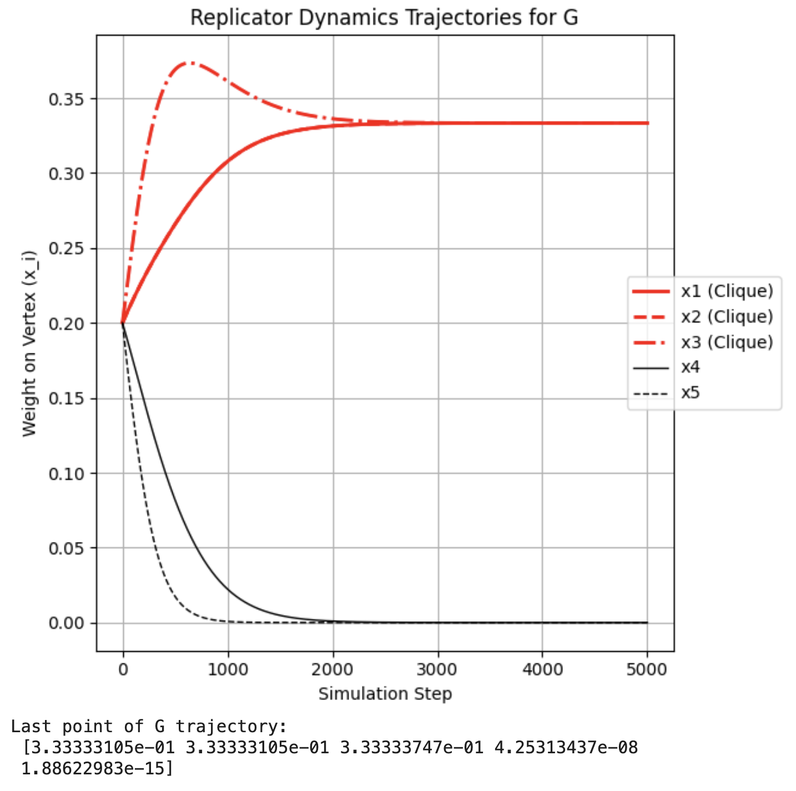
Fig. 3.5 Maximum clique (in red) for the example graph in Fig. 3.2.#
Increasing Maximization Theorem. Given a non-negative and symmetric payoff matrix \(\mathbf{W}\). Then \(f(\mathbf{x}(t))=\mathbf{x}^T(t)\mathbf{W}\mathbf{x}(t)\) is strictly increasing along any nonconstant trajectory of Replicator Dynamics.
This means that \(\frac{d}{dt}f(\mathbf{x}(t))>0\) i.e \(f(\mathbf{x}(t+1))>f(\mathbf{x}(t))\) unless \(\mathbf{x}(t)\) is a stationary point.
In addition, Replicator dymanics converge to a unique stationary point.
Therefore, we can stop the RD when \(|ƒ(\mathbf{x}(t+1))-ƒ(\mathbf{x}(t))|<\epsilon\). See for instance in Fig. 3.6 which corresponds to the dymanics in Fig. 3.5.
{kind=link}
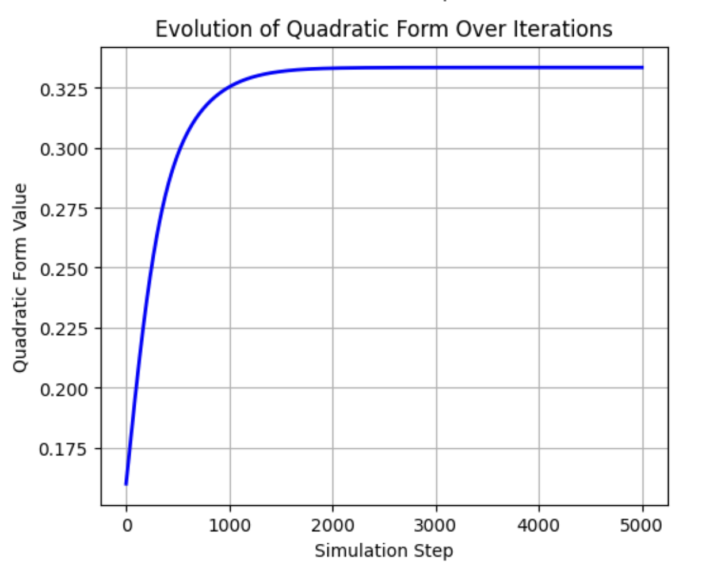
Fig. 3.6 Evolution of the cost function the example graph in Fig. 3.2.#
Limitations. RD works well when the input graph has a unique large clique in comparison with the sizes of other cliques in the graph. This is the case of the graph in Fig. 3.7 with \(n=10\) nodes and a unique clique of size \(k=4\).
{kind=link}
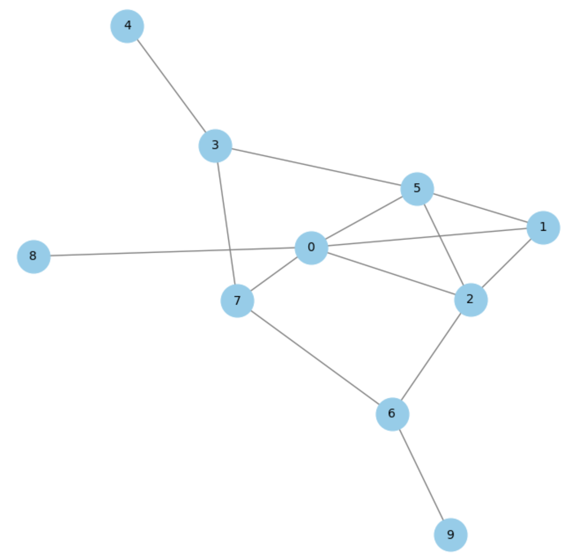
Fig. 3.7 Large graph with a maximum clique of \(k=4\) nodes.#
As we can see in Fig. 3.8, variables \(x_0\), \(x_1\), \(x_2\) and \(x_5\) converge to \(\frac{1}{4}\), whereas the remaining variables converge to zero. Then, the solution \(\mathbf{x}(T)=(\frac{1}{4},\frac{1}{4},\frac{1}{4},0,0,\frac{1}{4},0,0,0,0)\) is consistent with the maximum clique \(C=\{0,1,2,5\}\).
{kind=link}
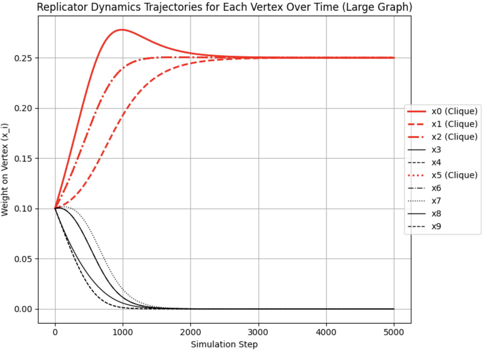
Fig. 3.8 Maximum clique (in red) for the example graph in Fig. 3.7.#
However, RD works not so well when there are some maximal (not maximum) cliques competing with the MC. We address this point in the following exercise.
Exercise. Given the large graph \(G\) in Fig. 3.7, the maximum clique is \(C=\{0,1,2,5\}\). The corresponding Replicator Dynamics in Fig. 3.8 describe the evolution of \(\mathbf{x}(t)\) while \(f(\mathbf{x}(t))=\mathbf{x}^T(t)\mathbf{A}\mathbf{x}(t)\) is maximized.
{kind=link}
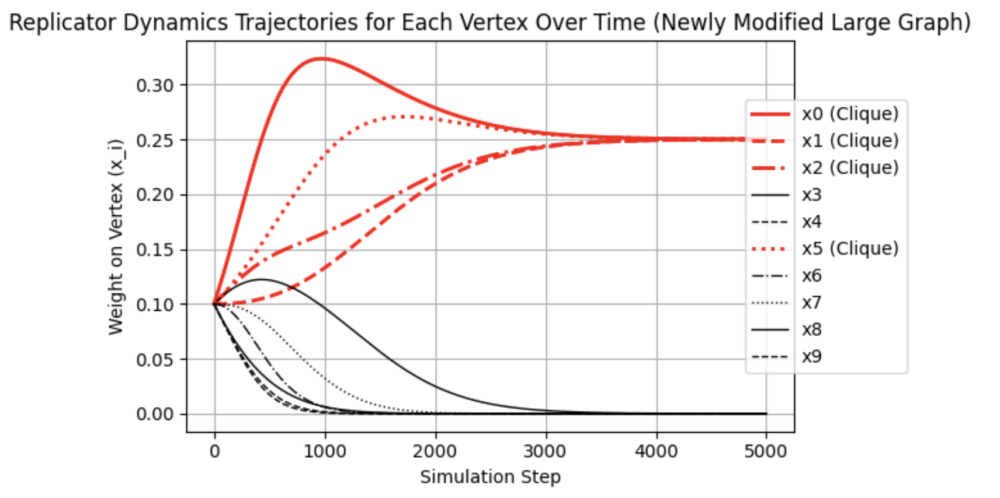
Fig. 3.9 Maximum clique (in red) for the example graph in Fig. 3.7 slightly modified.#
The Replicator Dynamics in Fig. 3.9 correspond to the same graph, but \(G\) has been slightly modified by adding an edge. Explain what edge can be.
Answer. First of all, we observe that RD converges to the same solution as before, i.e. \(\mathbf{x}(T)=(\frac{1}{4},\frac{1}{4},\frac{1}{4},0,0,\frac{1}{4},0,0,0,0)\). What differs now is how RD varies in between \(0\) and \(T\).
Note that \(x_3\), not belonging to the Maximal Clique (MC), initially grows, deviating significantly from other vertices that “clearly” do not belong to the MC. This indicates that the new edge seems to be rooted in vertex \(3\).
Observing now the dynamics of the vertices beloning to the MC (in red), note that their respective curves are now more different or distant than in Fig. 3.8. This means that their membership to the MC is not clear in the first stages of the search.
Again, the most different dynamics are given by \(x_0\).
Could we state that \(0\) and \(3\) are connected? Well, this is plausible since linked nodes tend to share/couple their RDs (this is basically why nodes in the MC converge to the same point).
A nice way of testing this hypothesis is that adding edge \((0,3)\) creates 2 maximal (not maximum) cliques of size 3: \(C_1=\{0,3,5\}\) and \(C_2=\{0,3,7\}\). The existence of maximal cliques which are competing with the MC complicates the RDs and makes them more “open” in the early stages of the search.
3.3.5. Integration with GNNs#
Motivation. In principle, Replicator Dynamics are able of approximating the MC (specially if we use \(\mathbf{A}+\frac{1}{2}\mathbf{I}\) instead of \(\mathbf{A}\) for avoiding spurious solutions). Actually, this is the method provided by the Gurobi framework for finding graph isomorphims via identifying the MC.
However, we want to learn from the experience in order to initialize the Replicator Dynamics closer to the optimum instead of launching it at the barycenter.
Main idea. Let us train a GNN to optimize \(f(\mathbf{x})\) (or \(\hat{f}(\mathbf{x})\)). Doing that requires four basic steps (see Fig. 3.10):
Provide node features. We need informative node features \(\mathbf{x}_i\in\mathbb{R}^d\) for initializing the nodal embeddings \(\mathbf{h}_i\) forming the latent space. These features can be as simple as the node degree or as complex of a positional encoding such as a set of eigenvectors of the Laplacian.
Add a Softmax layer. After the final (or \(K\)) aggregation layer of the GNN we need a linear layer so that an initial simplex point \(\mathbf{p}\) can be predicted for all the final nodal embeddings \(\mathbf{h}_i^{(K)}\). However, in order to force \(\mathbf{p}\) to be a simplex point we “softmax” it, which leads to \(\sum_ip_i=1\) and \(p_i\ge 0\;\forall i\).
Replicator Dynamics. In training time, it is possible to add a “few” (3-4) iterations of RD. In this regard, we use the discrete version of RD:
This expression is clearly derivable. However, in inference/test time, the same expression is “frozen” and it starts from the initial \(\mathbf{p}\) predicted by the NN.
{kind=link}
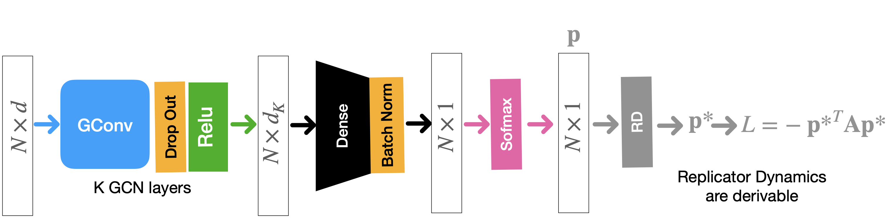
Fig. 3.10 Graph Neural Network with RD. Note that RD are derivable (i.e. they contribute to the gradient). Once frozen, they can be used in inference time as well. Herein, the number of iterations is unlimited.#
RD Decoder. In inference/test time, once the NN predicts \(\mathbf{p}^{\ast}\) we must extract what nodes belong to the MC using the probabilities in \(\mathbf{p}^{\ast}\). We do it as follows:
Algorithm 3.3 (RD-Decoder)
Inputs Given a final \(\mathbf{p}^{\ast}\) and a threshold \(\delta\in [0.5,1)\)
Output Nodes \(v_i\in G\) forming the MC.
\(p^{\ast}_{\sigma(1)}\ge p^{\ast}_{\sigma(2)}\ge,\ldots,\ge p^{\ast}_{\sigma(n)} = \text{Sort}(-\mathbf{p}^{\ast})\)
\({\cal C}=\emptyset\)
for \(n\in \{\sigma(1),\sigma(2),\ldots,\sigma(n)\}\):
if \((\mathbf{p}^{\ast}_n < \epsilon)\) & \((|{\cal C}|>0)\) then break
if \(\text{Can_Extend}({\cal C},n)\) then \({\cal C}={\cal C}\cup \{n\}\)
return \({\cal C}\)
This RD-Decoder is really simple. It is a greedy strategy that starts with high probability nodes and adds them to the candidate MC provided that: (a) the probability is good enough, and (b) the added node forms a clique wrt to the existing nodes in the clique.